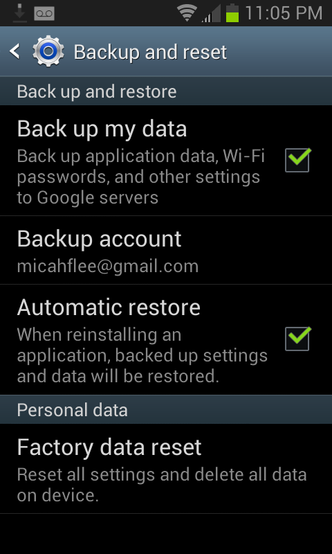

Use Android? You’re Probably Giving Google All Your Wifi Passwords
Go to your home screen, press the Menu button, select “Settings”, under “Personal” select “Backup and reset”. Is the “Back up my data” checkbox checked? If so, all of the wifi passwords that your phone remembers are being synced to your Google account.
And the passwords are in plaintext, too. When you format an Android phone and set it up on first run, after you login to your Google account and restore your backup, it immediately connects to wifi using a saved password. There’s no sort of password hash that your Android phone could send your router to authenticate besides the password itself.

Oh, and Google is part of NSA’s Prism program. If an NSA analyst, or likely someone from CIA or even FBI (Prism is a “team sport”), asks Google for information about you, your house’s and office’s wifi passwords are likely included in that data. Without a warrant.
With your home wifi password, an attacker can sniff wifi traffic outside your house (without connecting to your network) and then decrypt it all, passively eavesdropping on your private network. If the attacker wants to do more active attacks, they can connect to your wifi network and mount a man-in-the-middle attack to eavesdrop on and modify any unencrypted Internet traffic. If you download a file, they can serve you a malicious version instead. An attacker can scan for computers, phones, and tablets that are connected to your network, scan for open ports, and exploit vulnerable services. If you have a computer connected to your network that you haven’t done software updates on for a couple weeks, or that you’ve never configured a firewall on, or that you’ve installed random servers on and have never touched them since, there’s a good chance the attacker could take over those computers.
Anyway, maybe you should uncheck that box. Google says that they’ll delete this data when you stop backing it up with them.
Although it wouldn’t hurt to change your wifi password anyway.
Update: I have filed a feature request in Android’s bug tracker to offer encrypted backups, similar to the password sync options offered by Chrome and Firefox.
Update 2: The Android bug tracker isn’t the correct place to ask Google to fix this bug. The backup/restore feature is part of the proprietary Google apps for Android, not the open source Android project. This thread on the Google product forums is the correct place.


Legacy comments, imported from previous version of this blog:
rajendra pandey
February 4, 2014 03:15 AM
very good
Anonymous
July 12, 2013 04:10 AM
Why do act like this is so earth shattering? How else would backing up passwords work?
micah
July 12, 2013 10:57 AM
It's not earth shattering, I just think that most people are unaware that they're giving this data to Google.
A better way to back up passwords would be to encrypt them with a passphrase on the phone first, similar to how Firefox sync works. This way you can still have all your data backed up by Google, but Google wouldn't have access to any of it. You would need your passphrase to restore a backup.
rigelt
July 21, 2013 04:39 AM
It's less about private wifi, but more about corporate wifi. In some companies the corporate wifi offers access to file shares and many many other "internal" services... (think of a data center with an internal web interface to control switchable PDUs, often the implemented security features are very weak)
perth city to perth airport
November 28, 2015 10:21 AM
Years of service give you a perception of credibility and experience.
They serve several destinations among them being Manchester city centre, Northenden, Fallowsield, Buxton, Disley and many more. Coach timetables are available online prior to the ski season commencing and tickets can be purchased from the coach hire desk.
No Name
August 12, 2013 05:52 PM
Thank you Micah. I didn't realize this setting was checked by default. While it appears to have a legitimate purpose based on Google's statement, nevertheless, I change devices only every so often. Barring the failure of the device, it will be simple enough to turn this back on just prior to upgrading to a new phone. No need to have it turned on continuously until then. And in the event the phone dies unexpectedly (likely unlikely - I tried everything short of taking a sledgehammer to my previous phone and nothing would kill it), there is absolutely no data on my phone and no app that I would miss. I do not rely on my phone as a system of record for anything and I can't think of a reason that anyone would. My advice is no one should - for all the reasons pointed out above.
Bradford
October 13, 2014 02:13 AM
Knowing how to take such shots to capture the original emotion is often learned only through years of practice and experience. These few are some examples of different kind of photographs. Author JK Rowling has teamed up with Sony to launch a direct outlet, called Potter - More.
limo hire perth
December 31, 2015 10:45 AM
Once you arrive your money is now sitting at another curb for a few more hours while you are inside enjoying with family and friends. re just going home to unwind and eat dinner with your family. Compare the cars offered by several different limo services in Delaware and make sure you are paying for a limousine that will make it through the evening.
Dahaniel
July 17, 2013 01:15 PM
How can you exclude that the data is encrypted with your Google credentials?
micah
July 17, 2013 01:25 PM
@flamsmark's comment #14 on the bug report explains it well: https://code.google.com/p/android/issues/detail?id=57560#c14
crazy_crank
July 18, 2013 11:33 PM
For me, that is still no proof that Google doesn't store this information encrypted, in the sense they can't decrypt it themself. If you change your password, you have to enter your old password and your new password, so google has the ability to de- and reencrypt all your data during this process (Of course, in that moment it has to be decrypted and could be read by google, but that's not the point here). So restoring your backup after changing the password should really not be a problem and an indicator to unecrypted backups The only proof for me would be, if you use of the "password recovery" method, where you don't enter your previous passphrase. Have you (or anybody else) tried this and checked if his backup or at least his WLAN password still works? Don't get me wrong, but otherwise your arguments are a bit scanty. Looking forward for your reply
squiddle
July 11, 2013 11:38 PM
This feature of storing passwords in the cloud is available on other platforms/devices/services, too. It is not android only, the biggest contender in the mobile space, iOS, backs up your passwords, too. As with all (intransparent) systems it comes down to trust.
freediverx
July 12, 2013 03:28 AM
@squiddle "This feature of storing passwords in the cloud is available on other platforms/devices/services, too. It is not android only, the biggest contender in the mobile space, iOS, backs up your passwords, too. As with all (intransparent) systems it comes down to trust."
iOS encrypts all your data, unlike Android. Also Apple has dramatically different attitudes towards its users' privacy compared to Google and Samsung.
http://www.apple.com/apples-commitment-to-customer-privacy/
http://appleinsider.com/articles/13/07/05/samsungs-free-jay-z-album-delivered-via-android-spyware-app
Google's Eric Schmidt: “If you have something that you don’t want anyone to know, maybe you shouldn’t be doing it in the first place.”
micah
July 12, 2013 07:17 AM
iOS encrypts your data locally on your iOS device before sending it over the internet to Apple's servers to backup? Do you know what encryption key is used and where it's stored?
Companies advertise that they encrypt data, and they often do encrypt this data, however they also keep the encryption keys themselves. Dropbox is a good example - all your files are encrypted, however Dropbox can decrypt them themselves in response to law enforcement requests.
If iOS doesn't force users to memorize an encryption passphrase (the key would be derived from the passphrase), or if it's impossible to restore an iCloud backup from a brand new iPhone (the key is stored on the drive of the old phone), then their "encryption" doesn't mean much when it comes to Apple keeping your data private from themselves.
Hescominsoon
July 18, 2013 05:31 PM
I use spideroak...the data is encrypted before it leaves the machine and YOU keep the keys..they do not...they have zero knowledge and zero ability to get at your data.
Bill
August 11, 2013 07:00 PM
Micah: I can answer your question about iOS, and this information can also be found in the iOS security whitepaper as well as other 3rd party sources. Although most data in an iCloud backup is encrypted with a keybag stored in an Apple server, the keychain is different. It is encrypted with a hardware key that never leaves the device, and Apple does not know. For this reason, if you do an iCloud restore on a new device, you will get all the data back except for the passwords/private keys. If you do an iCloud restore on the exact same device, you get it all back.
In other words, this issue does not affect iOS devices with iCloud backup enabled.
whatever
September 13, 2013 04:38 AM
"And the passwords are in plaintext, too. When you format an Android phone and set it up on first run, after you login to your Google account and restore your backup, it immediately connects to wifi using a saved password. "
This is unclear to me in my decaffeinated state.
If I format an Android phone and set it up on first run, how do I login to my google account to restore a backup without first connecting the phone to wifi?
download Styx Master of Shadows
October 22, 2014 10:01 AM
I consider something truly interesting about your weblog so I saved to favorites . download Styx Master of Shadows http://ow.ly/Daxen
Ketim
October 21, 2013 07:22 PM
Thanks for including the the link to to request the security feature addition.
http://Appspecialist.nl
August 5, 2013 02:09 AM
Interesting blog! Is your theme custom made or did you download it from somewhere? A design like yours with a few simple adjustements would really make my blog jump out. Please let me know where you got your theme. With thanks
yamaha p85
September 7, 2013 03:34 AM
Effectively, I will be thus fired up that I have realized your post because I are already seeking good info about this for almost three a long time! You've got reduced the problem a whole lot certainly through scaning this history I have located a lot of
brand new and useful information relating to this issue!
best banner designer
December 19, 2015 05:16 PM
It is only in this way can any graphic designing company helps to serve you better.
A second table can be the actual content of the site. Starting a business has very few upfront costs, and with the right skill set and attitude work can flow in rather quickly.
Robot
July 12, 2013 01:16 AM
I really don't think the weak link is your wifi password. That would require the NSA being parked outside your house to listen in. Why do that when they can just tap your internet packets at your ISP? You should assume any internet traffic is sniffed en-route; that's what SSL is for...
Blue skies
August 12, 2013 04:16 PM
That's not a problem, plant something outside your place to capture and relay in real time not impossible. The advantage coming from LAN rather then WAN side is there is a lot less protections. They can intercept before it goes past your network (somes intercept before it exits via VPN) which means they don't need to compromise a VPN server to access your data. Finally they can more of a accurate idea who's computer and who is using it at that time.
dante
August 24, 2013 06:51 PM
I've recently switchen android phones. And i didn't needed to set any wifi password nor restoring a backup... I could just access all my previously used wifi netbooks... I hope it was after i logged in to my google account. Nut it doesn't feel like a secure system!
Android Backups Could Expose Wi-Fi Passwords to NSA
April 3, 2016 03:37 AM
[…] his personal blog, Electronic Frontier Foundation (EFF) staff technologist Micah Lee pointed out that the backup feature syncs all the network passwords your Android devices remember […]
https://astrologiaagapikaisxeseis.wordpress.com/
May 10, 2017 07:23 PM
Hi, i think that i saw you visited my weblog thus i czme to “return the favor”.I'm trying to find things to enhance my wweb site!I suppose its ok to use a few of your ideas!!
rigelt
July 21, 2013 04:44 AM
BTW: Google has issued a formal reply (not avail in enlish yet) http://www.heise.de/newsticker/meldung/Google-reagiert-auf-Kritik-an-Androids-Passwort-Speicherung-1920836.html
micah
July 21, 2013 12:19 PM
I think they gave the same response (in English) to Ars Technica: http://arstechnica.com/security/2013/07/does-nsa-know-your-wifi-password-android-backups-may-give-it-to-them/